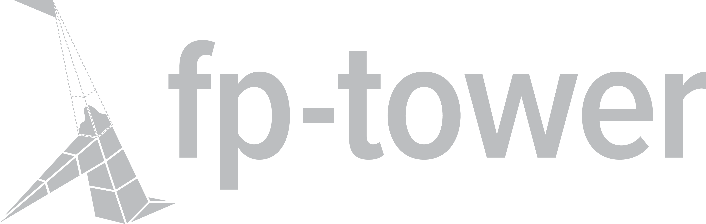
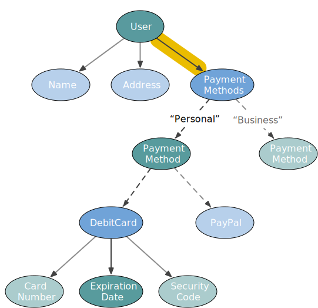
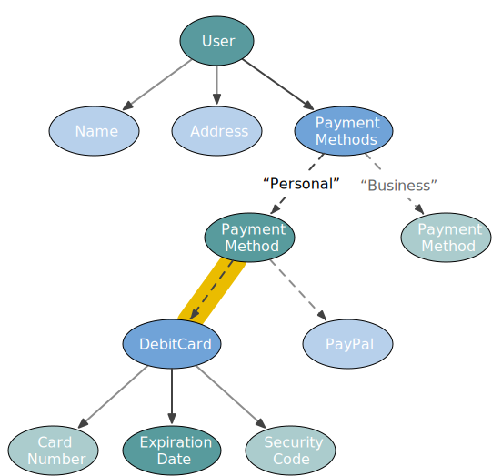
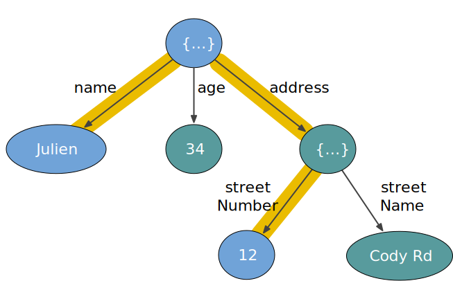
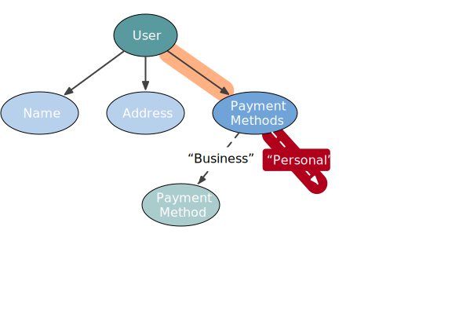

layout: true <div class="watermark"> <a href="https://github.com/fp-tower">  </a> </div> --- background-image: url(img/title.svg) --- # Julien Truffaut <br> .thirty-seven-left[ <img src="img/fp-tower/julien-truffaut.jpg" alt="Julien Truffaut" style="width:300px;"/> ] .sixty-two-right[<br> ## Backend Scala developer ## FP trainer at fp-tower.com ## Maintainer of <img src="img/fp-tower/monocle-logo.png" alt="Monocle" style="width:150px;"/> ] --- # Objectives <br><br> ## 1. Why do we need optics? What are they? ## 2. Current issues with Monocle API and how we intend to fix them --- # Mutation <br> ```scala case class User(`var` name: String, `var` address: Address) case class Address(`var` streetNumber: Int, `var` postcode: String) ``` --- # Mutation <br> ```scala case class User(var name: String, var address: Address) case class Address(var streetNumber: Int, var postcode: String) ``` <br> ```scala val julien = User("julien", Address(`12`, "E16 4SR")) julien.address.streetNumber // res1: Int = `12` ``` --- # Mutation <br> ```scala case class User(var name: String, var address: Address) case class Address(var streetNumber: Int, var postcode: String) ``` <br> ```scala val julien = User("julien", Address(12, "E16 4SR")) julien.address.streetNumber // res1: Int = 12 julien.address.streetNumber `= 16` julien // res2: User = User("julien", Address(`16`, "E16 4SR")) ``` --- # FP uses immutable data <br> ## 1. Free features: rollback, versioning ## 2. Easier to test ## 3. Manageable concurrency --- # Concurrency .twenty-seven-left[ <img src="img/corecursive_400x400.jpg" alt="corecursive" style="width:300px;"/> ] .sixty-two-right[ <br> <div class="quote"> <blockquote> <p>We had an engineer at Mozilla who decided to use a thread sanitiser tool to look for data races [in our C ++ codebase] ... and he found that in every case where Firefox used threads, there were data races. Not most cases - every single case.</p> <cite>Jim Blandy</cite> </blockquote> </div> ] <br><br><br><br><br><br><br><br><br><br><br><br><br><br> .center[ ## CoRecursive podcast: Rust and bitter C++ developers ] --- class: center, middle # How do we change something immutable? --- <br><br><br> .center[ ] .reference-top-left[.large[@impurepics]] --- <br><br><br> .center[ <img src="img/impurepics/Lightbulb-1.png" alt="Lightbub 1" style="width:1000px;"/> ] .reference-top-left[.large[@impurepics]] --- <br><br><br> .center[ <img src="img/impurepics/Lightbulb-2.png" alt="Lightbub 2" style="width:1000px;"/> ] .reference-top-left[.large[@impurepics]] --- <br><br><br> .center[ <img src="img/impurepics/Lightbulb-3.png" alt="Lightbub 3" style="width:1000px;"/> ] .reference-top-left[.large[@impurepics]] --- <br><br><br> .center[ ] .reference-top-left[.large[@impurepics]] --- <br><br><br> .center[ <img src="img/impurepics/Lightbulb-5.png" alt="Lightbub 5" style="width:1000px;"/> ] .reference-top-left[.large[@impurepics]] --- class: center, middle # How do we copy objects in Scala? --- # Example #1: Simple case <br> ```scala case class User(name: String, address: Address) case class Address(streetNumber: Int, postcode: String) val julien = User("Julien", Address(`12`, "E16 4SR")) ``` .center[ ## How do we change the .hl2[street number] using .hl2[vanilla Scala]? ] -- ```scala julien.`copy`(address = julien.address.`copy`(streetNumber = 16) ) // res1: User = User("Julien", Address(`16`, "E16 4SR")) ``` --- # Example #2: Enumeration <br> ```scala import java.time.YearMonth sealed trait PaymentMethod case class PayPal(email: String) extends PaymentMethod case class DebitCard( cardNumber : String, expirationDate : YearMonth, securityCode : Int ) extends PaymentMethod ``` --- # Example #2: Enumeration <br> ```scala case class User(name: String, address: Address, paymentMethod: PaymentMethod) val julien = User( "Julien", Address(12, "E16 4SR"), DebitCard("4568 5794 3109 3087", YearMonth.of(`2022, 4`), 361) ) val anna = User("Anna", Address(10, "EC2M 7EB"), PayPal("anna@fp-tower.com")) ``` .center[ ## How do we change the .hl2[expiry date] using .hl2[vanilla Scala]? ] --- # Example #2: Enumeration <br> ```scala def updateExpiry(user: User, newExpiry: YearMonth): User = user.`copy`(paymentMethod = user.paymentMethod.`copy`(expirationDate = newExpiry) ) ``` --- # Example #2: Enumeration <br> ```scala def updateExpiry(user: User, newExpiry: YearMonth): User = user.copy(paymentMethod = user.paymentMethod.`copy`(expirationDate = newExpiry) ) // error: value `copy is not a member of PaymentMethod` // user.paymentMethod.copy(expirationDate = newExpiry) // ^^^^^^^^^^^^^^^^^^^^^^^ ``` .center[ ## How do we modify an enumeration? ] --- # Example #2: Enumeration <br> ```scala def updateExpiry(user: User, newExpiry: YearMonth): User = user.copy(paymentMethod = user.paymentMethod `match` { `case` card : DebitCard => ??? `case` paypal: PayPal => ??? } ) ``` --- # Example #2: Enumeration <br> ```scala def updateExpiry(user: User, newExpiry: YearMonth): User = user.copy(paymentMethod = user.paymentMethod match { case card : DebitCard => card.`copy`(expirationDate = newExpiry) case paypal: PayPal => ??? } ) ``` --- # Example #2: Enumeration <br> ```scala def updateExpiry(user: User, newExpiry: YearMonth): User = user.copy(`paymentMethod` = user.paymentMethod match { case card : DebitCard => card.copy(expirationDate = newExpiry) case paypal: PayPal => ??? } ) ``` --- # Example #2: Enumeration <br> ```scala def updateExpiry(user: User, newExpiry: YearMonth): User = user.copy(paymentMethod = user.paymentMethod match { case card: DebitCard => card.copy(expirationDate = newExpiry) case _ : PayPal => user.paymentMethod // do nothing } ) ``` --- # Example #2: Enumeration <br> ```scala def updateExpiry(user: User, newExpiry: YearMonth): User = user.copy(paymentMethod = user.paymentMethod match { case card: DebitCard => card.copy(expirationDate = newExpiry) case _ : PayPal => user.paymentMethod // do nothing } ) ``` .small-code[ .forty-seven-left[ ```scala updateExpiry(julien, YearMonth.of(`2024, 1`)) // res: User = User( // "Julien", // Address(12, "E16 4SR"), // DebitCard("4568 5794 3109 3087", `2024-01`, 361) // ) ``` ] .forty-seven-right[ ```scala updateExpiry(anna, YearMonth.of(`2024, 1`)) // res: User = User( // "Anna", // Address(10, "EC2M 7EB"), // `PayPal("anna@fp-tower.com")` // ) ``` ] ] --- # Example #3: Data structure <br> ```scala case class User(name: String, address: Address, paymentMethods: `Map[String, PaymentMethod]`) val julien = User( "Julien", Address(12, "E16 4SR"), Map( "Business" -> PayPal("julien@fp-tower.com"), `"Personal"` -> DebitCard("4568 8980 2376 5431", YearMonth.of(`2021, 7`), 995) ) ) ``` .center[ ## How do we change the .hl2[expiry date] of the .hl2["Personal"] payment method? ] --- # Example #3: Data structure <br> ```scala def updateExpiry(user: User, `paymentName`: String, newExpiry: YearMonth): User = user.copy(paymentMethods = user.paymentMethods.`get(paymentName)` match { case None => ??? case Some(payPal: PayPal) => ??? case Some(card : DebitCard) => ??? } ) ``` --- # Example #3: Data structure <br> ```scala def updateExpiry(user: User, paymentName: String, newExpiry: YearMonth): User = user.copy(paymentMethods = user.paymentMethods.get(paymentName) match { case `None | Some(_: PayPal)` => user.paymentMethods // do nothing case Some(card: DebitCard) => ??? } ) ``` --- # Example #3: Data structure <br> ```scala def updateExpiry(user: User, paymentName: String, newExpiry: YearMonth): User = user.copy(paymentMethods = user.paymentMethods.get(paymentName) match { case None | Some(_: PayPal) => user.paymentMethods // do nothing case Some(card: DebitCard) => val updatedCard = card.`copy`(expirationDate = `newExpiry`) user.paymentMethods.updated(paymentName, updatedCard) } ) ``` --- # Example #3: Data structure <br> ```scala def updateExpiry(user: User, paymentName: String, newExpiry: YearMonth): User = user.copy(paymentMethods = user.paymentMethods.get(paymentName) match { case None | Some(_: PayPal) => user.paymentMethods // do nothing case Some(card: DebitCard) => val updatedCard = card.copy(expirationDate = newExpiry) user.paymentMethods.`updated`(paymentName, `updatedCard`) } ) ``` --- # Optic <br> .fifty-seven-left[ ```scala trait Optic[`Source`, `Target`] { def get(source: Source): Target def replace(newTarget: Target)(source: Source): Source def modify(update: Target => Target)(source: Source): Source } ``` ] --- # Optic <br> .fifty-seven-left[ ```scala trait Optic[Source, Target] { def get(source: Source): Target def replace(newTarget: Target)(source: Source): Source def modify(update: Target => Target)(source: Source): Source } ``` ] .forty-two-right[ ```scala val name: Optic[User, String] = ... name.get(user) // res: String = `"Julien"` name.replace("Bob")(user) // res: User = User(`"Bob"`, Address(12, ... name.modify(_.toUpperCase)(user) // res: User = User(`"JULIEN"`, Address(12, ... ``` ] --- # Optics: Lens, Optional, Traversal, Prism, Iso, ... <br> ```scala trait Optic[Source, Target] { def get (source: Source): ` Target ` // Lens , Iso def getOption(source: Source): `Option[Target]` // Prism, Optional def getAll (source: Source): ` List[Target]` // Fold , Traversal def replace(newTarget: Target)(source: Source): Source def modify(update: Target => Target)(source: Source): Source } ``` --- # Optics composition <br> ```scala trait Optic[Source, Target] { def andThen[Next](other: Optic[Target, Next]): Optic[Source, Next] } ``` .center[ <img src="img/diagrams/optics-composition.svg" alt="Optics composition" style="width:800px;"/> ] --- # Optics composition .fifty-two-right[ <br><br><br><br> ```scala paymentMethods .andThen(index("Personal")) .andThen(debitCard) .andThen(expirationDate) ``` ] --- # Optics composition .fifty-two-right[ <br><br><br><br> ```scala `paymentMethods` .andThen(index("Personal")) .andThen(debitCard) .andThen(expirationDate) ``` ]  --- # Optics composition .fifty-two-right[ <br><br><br><br> ```scala paymentMethods .andThen(`index("Personal")`) .andThen(debitCard) .andThen(expirationDate) ``` ] <img src="img/diagrams/user-to-expiration-date-2.svg" alt="User to expiration date " style="width:430px;"/> --- # Optics composition .fifty-two-right[ <br><br><br><br> ```scala paymentMethods .andThen(index("Personal")) .andThen(`debitCard`) .andThen(expirationDate) ``` ]  --- # Optics composition .fifty-two-right[ <br><br><br><br> ```scala paymentMethods .andThen(index("Personal")) .andThen(debitCard) .andThen(`expirationDate`) ``` ] --- class: medium-code # Why optics are not popular in Scala? <br> .center[.twelve-left[ <br> ## Vanilla<br>Scala <br><br> ## Optics ]] .eighty-two-right[ ```scala def updateExpiry(user: User, paymentName: String, newExpiry: YearMonth): User = user.copy(paymentMethods = user.paymentMethods.get(paymentName) match { case None | Some(_: PayPal) => user.paymentMethods case Some(card: DebitCard) => val updatedCard = card.copy(expirationDate = newExpiry) user.paymentMethods.updated(paymentName, updatedCard) } ) ``` ```scala def updateExpiry(user: User, paymentName: String, newExpiry: YearMonth): User = paymentMethods .andThen(index(paymentName)) .andThen(debitCard) .andThen(expirationDate) .replace(newExpiry)(user) ``` ] --- class: medium-code # Problem #1: Multiple compose methods <br> ```scala def updateExpiry(user: User, paymentName: String, newExpiry: YearMonth): User = paymentMethods .compose`Optional`(index(paymentName)) .compose`Prism`(debitCard) .compose`Lens`(expirationDate) .replace(newExpiry)(user) ``` ## Monocle 2: one compose method per type of optic ```scala trait Optic[Source, Target] { def compose`Optional`[Next](other: `Optional`[Target, Next]): Optic[Source, Next] def compose`Prism` [Next](other: `Prism` [Target, Next]): Optic[Source, Next] def compose`Lens` [Next](other: `Lens` [Target, Next]): Optic[Source, Next] ... } ``` --- class: medium-code # Solution: Overloaded methods <br> ```scala def updateExpiry(user: User, paymentName: String, newExpiry: YearMonth): User = paymentMethods .andThen(index(paymentName)) .andThen(debitCard) .andThen(expirationDate) .replace(newExpiry)(user) ``` <br> ```scala trait Optic[Source, Target] { def andThen[Next](other: Optional[Target, Next]): Optic[Source, Next] def andThen[Next](other: Prism [Target, Next]): Optic[Source, Next] def andThen[Next](other: Lens [Target, Next]): Optic[Source, Next] ... } ``` --- class: medium-code # Problem: Type inference hates overloads <br> ```scala def updateExpiry(user: User, paymentName: String, newExpiry: YearMonth): User = paymentMethods .`andThen(index(paymentName))` .andThen(debitCard) .andThen(expirationDate) .replace(newExpiry)(user) ``` <br> ```scala // error: ambiguous implicit values // both method `mapIndex` of type ... and method `listMapIndex` of type ... // match expected type `Index[Source, String, Target]` ``` --- class: medium-code ## Solution 1: Type annotation ```scala def updateExpiry(user: User, paymentName: String, newExpiry: YearMonth): User = paymentMethods .andThen(index(paymentName)`: Optional[Map[String, PaymentMethod], PaymentMethod]`) .andThen(debitCard) .andThen(expirationDate) .replace(newExpiry)(user) ``` -- ## Solution 2: composeOptional, composePrism, composeLens, ... -- ## Solution 3: Wait for Scala 3 (mostly) -- ## Solution 4: Monocle 3 --- class: medium-code # Monocle 3: andThen + common shortcuts ```scala import monocle.function.Index.index trait Optic[Source, Target] { `def index`[Key, Next](key: Key): Optic[Source, Next] = // simplified signature andThen(index(key): Optional[Target, Next]) } ``` --- class: medium-code # Monocle 3: andThen + common shortcuts ```scala import monocle.function.Index.index trait Optic[Source, Target] { def index[Key, Next](key: Key): Optic[Source, Next] = // simplified signature andThen(index(key): Optional[Target, Next]) } ``` .forty-seven-left[ ## Monocle 2 ```scala optic.`andThen(index(key))` ``` ] .forty-seven-right[ ## Monocle 3 ```scala optic.`index(key)` ``` ] --- class: medium-code # Monocle 3: andThen + common shortcuts ```scala import monocle.function.Index.index trait Optic[Source, Target] { def index[Key, Next](key: Key): Optic[Source, Next] = // simplified signature andThen(index(key)`: Optional[Target, Next]`) } ``` .forty-seven-left[ ## Monocle 2 ```scala optic.andThen(index(key)) ``` ] .forty-seven-right[ ## Monocle 3 ```scala optic.index(key) ``` ] --- class: medium-code # Better discoverability and documentation ```scala trait Optic[Source, Target] { def index[Key, Next](key: Key) = andThen(index(key): Optional[Target, Next]) } ``` <br> .center[ ] --- class: medium-code # Problem #2: Optics creation <br> ```scala val paymentMethods: Optic[User, Map[String, PaymentMethod]] = ... val debitCard : Optic[PaymentMethod, DebitCard] = ... val expirationDate: Optic[DebitCard, YearMonth] = ... ``` .sixty-seven-left[ ```scala def index[Key, Value](key: Key): Optic[Map[Key, Value], Value] = ... ``` ] <br><br><br><br> ```scala def updateExpiry(user: User, paymentName: String, newExpiry: YearMonth): User = paymentMethods .andThen(index(paymentName)) .andThen(debitCard) .andThen(expirationDate) .replace(user, newExpiry) ``` --- class: medium-code # Problem #2: Optics creation <br> ```scala val paymentMethods: `Lens`[User, Map[String, PaymentMethod]] = Lens[User, Map[String, PaymentMethod]](_.paymentMethods)( (user, newPaymentMethods) => user.copy(paymentMethods = newPaymentMethods) ) val debitCard: `Prism`[PaymentMethod, DebitCard] = Prism.partial{ case pm: PaymentMethod => pm }(identity) val expirationDate: `Lens`[DebitCard, YearMonth] = Lens[DebitCard, YearMonth](_.expirationDate)( (debitCard, newExpirationDate) => debitCard.copy(expirationDate = newExpirationDate) ) ``` .forty-two-left[.center[ ## 1. Lots of boiler plate code ]] .fifty-two-right[.center[ ## 2. Requires to know the difference<br>between optics types ]] --- class: medium-code # Monocle 2 macros <br> ```scala import monocle.macros.{GenLens, GenPrism} val paymentMethods = Gen`Lens`[User](_.paymentMethods) val debitCard = Gen`Prism`[PaymentMethod, DebitCard] val expirationDate = Gen`Lens`[DebitCard](_.expirationDate) ``` <br> .center[ ## It still requires to know the difference between optics types ] --- background-image: url(img/lotr-focus.jpg) --- class: medium-code # Solution: Focus macro (Scala 3) <br> ```scala import monocle.Focus Focus[User](_.address.streetNumber) // res: `Lens`[User, Int] ``` --- class: medium-code # Solution: Focus macro (Scala 3) <br> ```scala import monocle.Focus Focus[User](_.address.streetNumber) // res: Lens[User, Int] Focus[User](_.paymentMethods.`index("Personal")`) // res: `Optional`[User, PaymentMethod] ``` --- class: medium-code # Solution: Focus macro (Scala 3) <br> ```scala import monocle.Focus Focus[User](_.address.streetNumber) // res: Lens[User, Int] Focus[User](_.paymentMethods.index("Personal")) // res: Optional[User, `PaymentMethod`] ``` --- class: medium-code # Solution: Focus macro (Scala 3) <br> ```scala import monocle.Focus Focus[User](_.address.streetNumber) // res: Lens[User, Int] Focus[User](_.paymentMethods.index("Personal").`as[DebitCard]`) // res: Optional[User, `DebitCard`] ``` --- class: medium-code # Solution: Focus macro (Scala 3) <br> ```scala import monocle.Focus Focus[User](_.address.streetNumber) // res: Lens[User, Int] Focus[User](_.paymentMethods.index("Personal").as[DebitCard].`expirationDate`) // res: Optional[User, `YearMonth`] ``` --- class: medium-code # Solution: Focus macro (Scala 3) <br> ```scala import monocle.Focus Focus[User](_.address.streetNumber) // res: Lens[User, Int] Focus[User](_.paymentMethods.index("Personal").as[DebitCard].expirationDate) // res: Optional[User, YearMonth] Focus[User](_.paymentMethods.`each`.as[DebitCard].cardNumber) // res: `Traversal`[User, String] ``` --- class: medium-code # Solution: Focus macro (Scala 3) <br> ```scala import monocle.Focus Focus[User](_.address.streetNumber) // res: Lens[User, Int] Focus[User](_.paymentMethods.index("Personal").as[DebitCard].expirationDate) // res: Optional[User, YearMonth] Focus[User](_.paymentMethods.each.as[DebitCard].cardNumber) // res: Traversal[User, String] ``` <br> .center[ ## Thanks to .hl2[Yilin Wei] and .hl2[Ken Scambler] ] --- class: medium-code # Bonus: Partially applied optics <br> ```scala import monocle.syntax.all._ user .focus(_.address.streetNumber) .replace(12) // res: User = ... user .focus(_.paymentMethods.each.as[DebitCard].expirationDate) .modify(_.plusYears(2)) // res: User = ... ``` --- # Problem 3: Lawfulness .center[ <img src="img/police.jpg" alt="Police" style="width:500px;"/> ] --- class: center, middle # Expected behaviour<br><br>Contract --- class: medium-code # Problem 3: Expected behaviour .fifty-four-left[ ```scala trait Optic[Source, Target] { def get ... def replace ... def modify ... } val user = User("Julien", 34, Address(12, "Cody Rd")) val userToStreetNumber: Optic[User, Int] = Focus[User](_.address.streetNumber) ``` ] .forty-five-right[.center[ ]] --- class: medium-code # Problem 3: Expected behaviour .fifty-four-left[ ```scala trait Optic[Source, Target] { def get ... def replace ... def modify ... } val user = User("Julien", 34, Address(12, "Cody Rd")) val userToStreetNumber: Optic[User, Int] = Focus[User](_.address.streetNumber) val newUser = userToStreetNumber.replace(`48`)(user) // User("Julien", 34, Address(`48`, "Cody Rd")) ``` ] .forty-five-right[.center[ ]] --- class: medium-code # Problem 3: Expected behaviour .fifty-four-left[ ```scala trait Optic[Source, Target] { def get ... def replace ... def modify ... } val user = User("Julien", 34, Address(12, "Cody Rd")) val userToStreetNumber: Optic[User, Int] = Focus[User](_.address.streetNumber) val newUser = userToStreetNumber.replace(`48`)(user) // User("Julien", 34, Address(`48`, "Cody Rd")) val newStreetNumber = userToStreetNumber.get(newUser) // `48` ``` ] .forty-five-right[.center[ ]] --- class: medium-code # Problem 3: Expected behaviour .sixty-seven-left[ ```scala trait Optic[Source, Target] { def get ... def replace ... def modify ... } val userToStreetNumber: Optic[User, Int] = Focus[User](_.address.streetNumber) test(`"get what you replace"`){ forAll{ (user: User, newStreetNumber: Int) => val newUser = userToStreetNumber.replace(newStreetNumber)(user) assertEquals( userToStreetNumber.get(newUser), newStreetNumber ) } } ``` ] .thirty-two-left[.center[ <br><br><br><br><br> ## Property-Based Testing<br>(PBT) ]] --- class: medium-code # Problem 3: Expected behaviour .sixty-seven-left[ ```scala trait Optic[Source, Target] { def get ... def replace ... def modify ... } val userToStreetNumber: Optic[User, Int] = Focus[User](_.address.streetNumber) test("get what you replace"){ `forAll{ (user: User, newStreetNumber: Int)` => val newUser = userToStreetNumber.replace(newStreetNumber)(user) assertEquals( userToStreetNumber.get(newUser), newStreetNumber ) } } ``` ] .thirty-two-left[.center[ <br><br><br><br><br> ## Property-Based Testing<br>(PBT) ]] --- class: medium-code # Problem 3: Expected behaviour .sixty-seven-left[ ```scala trait Optic[Source, Target] { def get ... def replace ... def modify ... } val userToStreetNumber: Optic[User, Int] = Focus[User](_.address.streetNumber) test("get what you replace"){ forAll{ (user: User, newStreetNumber: Int) => val newUser = userToStreetNumber.`replace`(newStreetNumber)(user) `assertEquals`( userToStreetNumber.`get`(newUser), newStreetNumber ) } } ``` ] .thirty-two-left[.center[ <br><br><br><br><br> ## Property-Based Testing<br>(PBT) ]] --- # Lego principle <br> ## When using a constructor, you .hl2[NEED] to run the tests ```scala val address = Optic[User, Address](_.address )((newOne, user ) => user.copy(address = newOne)) val streetNumber = Optic[Address, Int] (_.streetNumber)((newOne, address) => address.copy(streetNumber = newOne)) ``` ## When using a combinator, you .hl2[DON'T NEED] to run the tests ```scala address andThen streetNumber ``` --- class: medium-code # Zip can break the expected behaviour .fifty-four-left[ ```scala trait Optic[Source, Target] { // get/replace/modify def zip[Other](other: Optic[Source, Other]) : Optic[Source, (Target, Other)] } val nameAndStreetNumber: Optic[User, (String, Int)] = Focus[User](_.name) .zip(Focus[User](_.address.streetNumber)) ``` ] .forty-five-right[.center[  ]] --- class: medium-code # Zip can break the expected behaviour .fifty-four-left[ ```scala trait Optic[Source, Target] { // get/replace/modify def zip[Other](other: Optic[Source, Other]) : Optic[Source, (Target, Other)] } val nameAndStreetNumber: Optic[User, (String, Int)] = Focus[User](_.name) .zip(Focus[User](_.address.streetNumber)) nameAndStreetNumber.`get`(user) // res: (String, Int) = ("Julien", 12) ``` ] .forty-five-right[.center[ ]] --- class: medium-code # Zip can break the expected behaviour .fifty-four-left[ ```scala trait Optic[Source, Target] { // get/replace/modify def zip[Other](other: Optic[Source, Other]) : Optic[Source, (Target, Other)] } val nameAndStreetNumber: Optic[User, (String, Int)] = Focus[User](_.name) .zip(Focus[User](_.address.streetNumber)) nameAndStreetNumber.`get`(user) // res: (String, Int) = ("Julien", 12) nameAndStreetNumber.`replace`(user, (`"Bob", 48`)) // newUser: User = // User(`"Bob"`, 34, Address(`48`, "Cody Rd")) ``` ] .forty-five-right[.center[ ]] --- class: medium-code # Zip can break the expected behaviour .fifty-four-left[ ```scala trait Optic[Source, Target] { // get/replace/modify def zip[Other](other: Optic[Source, Other]) : Optic[Source, (Target, Other)] } val `name`: Optic[User, String] = Focus[User](_.name) val nameTwice: Optic[User, (String, String)] = `name`.zip(`name`) ``` ] --- class: medium-code # Zip can break the expected behaviour .sixty-two-left[ ```scala trait Optic[Source, Target] { // get/replace/modify def zip[Other](other: Optic[Source, Other]) : Optic[Source, (Target, Other)] } val name: Optic[User, String] = Focus[User](_.name) val nameTwice: Optic[User, (String, String)] = name.zip(name) val updatedUser = nameTwice.`replace`((`"Bob", "Alice"`))(user) // User(`"Alice"`, 34, Address(12, "Cody Rd")) ``` ] --- class: medium-code # Zip can break the expected behaviour .sixty-two-left[ ```scala trait Optic[Source, Target] { // get/replace/modify def zip[Other](other: Optic[Source, Other]) : Optic[Source, (Target, Other)] } val name: Optic[User, String] = Focus[User](_.name) val nameTwice: Optic[User, (String, String)] = name.zip(name) val updatedUser = nameTwice.replace((`"Bob", "Alice"`))(user) // User("Alice", 34, Address(12, "Cody Rd")) nameTwice.get(updatedUser) // (`"Alice", "Alice"`) ``` ] --- .center[ ] --- # Solution: Documentation ```scala trait Optic[Source, Target] { // Zip two optics together that starts with the same Source type // {{ // val nameOptic: Optic[User, String] = ... // val ageOptic : Optic[User, Int] = ... // // nameOptic.zip(ageOptic).get(user) // res: (String, Int) = ("Bob", 42) // }} // `WARNING: This combinator can break the "get what you replace" property` // `if you zip two optics that focus on the same data`. For example: // {{ // val broken = nameOptic.zip(nameOptic) // val newNames = ("Bob", "Alice") // val newUser = broken.replace(newNames)(user) // // broken.get(newUser) != newNames // }} def zip[Other](other: Optic[Source, Other]): Optic[Source, (Target, Other)] } ``` --- # Summary .fifty-seven-left[ <br> ## Difficult to transform immutable data ## Optics offers a path-like API to<br>get/replace/modify a target ## Optics are a better copy method ] .thirty-seven-left[ ] --- <br><br> .forty-seven-left[ # Monocle 2 ## Boiler platy ## Requires too much knowledge ## Too strict ] .forty-seven-right[ # Monocle 3 ## overloaded andThen ## Shortcuts for "index", "each", ... ## Softer stance on "laws" ## Focus macro ] --- <br><br><br><br><br><br> .center[ # Monocle 3 is available today (experimental) ## Scala 2.13 and 3.0.0-M3 ] ```scala libraryDependencies ++= Seq( "com.github.julien-truffaut" %% "monocle-core" % `"3.0.0-M1"`, "com.github.julien-truffaut" %% "monocle-macro" % `"3.0.0-M1"`, // Not required for Scala 3 ) ``` --- # Join the team <br><br><br> <div class="row"> <div class="column"> <div class="card"> <img src="img/CarlosQuiroz.png" alt="Carlos Quiroz" style="width:98%"> <div class="container"> <h3>Carlos Quiroz</h3> </div> </div> </div> <div class="column"> <div class="card"> <div class="container"> <h3>Ken Scambler</h3> </div> </div> </div> <div class="column"> <div class="card"> <div class="container"> <h3>Julien Truffaut</h3> </div> </div> </div> <div class="column"> <div class="card"> <img src="img/YilinWei.png" alt="Yilin Wei" style="width:99%"> <div class="container"> <h3>Yilin Wei</h3> </div> </div> </div> <div class="column"> <div class="card"> <div class="container"> <h3>Yourself</h3> </div> </div> </div> </div> --- background-image: url(img/fp-tower/website-background.svg) class: center, middle, white # .white[www.fp-tower.com/courses/foundations] .title[Coupon: Monocle3] ## .white[15% discount until 28th of February] <br> --- background-image: url(img/fp-tower/website-background.svg) class: center, middle, white .title[Monocle 4] --- # Error reporting: Missing key .fifty-two-right[ <br><br><br> ```scala paymentMethods .`andThen(index("Personal"))` .andThen(debitCard) .andThen(expirationDate) ``` .center[ ### There is a no "Personal" payment method ] ] <br>  --- # Error reporting: Invalid payment method .fifty-two-right[ <br><br><br> ```scala paymentMethods .andThen(index("Personal")) .`andThen(debitCard)` .andThen(expirationDate) ``` .center[ ### There is a "Personal" payment method but it is a Paypal account ] ] <br> --- class: medium-code # Monocle 2 & 3: replaceOption, modifyOption <br> ```scala val businessExpirationDate = paymentMethods .andThen(index("Personal")) .andThen(debitCard) .andThen(expirationDate) businessExpirationDate.`modifyOption`(julien, `_.plusYears(2)`) // res: Option[User] = Some(User( // "Julien", // Address(12, "E16 4SR"), // Map( // "Business" -> PayPal("julien@fp-tower.com"), // "Personal" -> DebitCard("4568 8980 2376 5431", 2024-04), 995) // ) // )) ``` --- class: medium-code # Monocle 2 & 3: replaceOption, modifyOption <br> ```scala val businessExpirationDate = paymentMethods .andThen(index("Personal")) .andThen(debitCard) .andThen(expirationDate) businessExpirationDate.modifyOption(julien, _.plusYears(2)) // res: Option[User] = `Some`(User( // "Julien", // Address(12, "E16 4SR"), // Map( // "Business" -> PayPal("julien@fp-tower.com"), // "Personal" -> DebitCard("4568 8980 2376 5431", `2024`-04), 995) // ) // )) ``` --- class: small-code # Monocle 2 & 3: replaceOption, modifyOption .forty-seven-left[ ## Missing key ```scala val bob = User( "Bob", Address(12, "E16 4SR"), `Map.empty` ) businessExpirationDate.modifyOption( bob, _.plusYears(2) ) // res: Option[User] = `None` ``` ] .forty-seven-right[ ## Invalid payment method ```scala val anna = User( "Anna", Address(12, "E16 4SR"), `Map("Personal" -> PayPal("anna@fp-tower.com"))` ) businessExpirationDate.modifyOption( anna, _.plusYears(2) ) // res: Option[User] = `None` ``` ] --- class: small-code # Solution: use Either .forty-seven-left[ ## Missing key ```scala val bob = User( "Bob", Address(12, "E16 4SR"), Map.empty ) businessExpirationDate.modifyError( bob, _.plusYears(2) ) // res: Either[Error, User] = `Left(Missing key personal in field paymentMethods)` ``` ] .forty-seven-right[ ## Invalid payment method ```scala val anna = User( "Anna", Address(12, "E16 4SR"), Map("Personal" -> PayPal("anna@fp-tower.com")) ) businessExpirationDate.modifyOption( anna, _.plusYears(2) ) // res: Either[Error, User] = `Left(Invalid PaymentMethod, expected: DebitCard, found: Paypal)` ``` ] --- class: center, middle # Either[???, User] --- class: center, middle # Either[String, User] ? # Either[Throwable, User] ? --- class: medium-code # Monocle 4 <br> ```scala trait Optic[`+Error`, Source, Target] { def modifyError(source: Source, update: Target => Target): Either[`Error`, Source] } ``` <br> .center[ ## Similar to `E` type parameter in ZIO ] --- class: medium-code # Monocle 4 <br> ```scala trait Optic[`+Error`, Source, Target] { def modifyError(source: Source, update: Target => Target): Either[`Error`, Source] def andThen[Next](other: Optic[`Error`, Target, Next]): Optic[`Error`, Source, Next] } ``` --- class: medium-code # Monocle 4 <br> ```scala trait Optic[+Error, Source, Target] { def modifyError(source: Source, update: Target => Target): Either[Error, Source] def andThen[Next](other: Optic[Error, Target, Next]): Optic[Error, Source, Next] } ``` <br> ```scala val optic1: Optic[`String` , User , PaymentMethod] = ... val optic2: Optic[`Throwable`, PaymentMethod, YearMonth ] = ... ``` -- ```scala optic1.andThen(optic2) // res: Optic[`Any`, User, YearMonth] ``` --- class: medium-code # Monocle 4: variance and union types <br> ```scala trait Optic[+Error, Source, Target] { def modifyError(source: Source, update: Target => Target): Either[Error, Source] def andThen[`E1`, Next](other: Optic[`E1`, Target, Next]): Optic[`E1 | Error`, Source, Next] } ``` <br> ```scala val optic1: Optic[String , User , PaymentMethod] = ... val optic2: Optic[Throwable, PaymentMethod, YearMonth ] = ... ``` ```scala optic1.andThen(optic2) // res: Optic[`String | Throwable`, User, YearMonth] ``` -- .center[ ### Introducing error reporting in optics (https://blog.fp-tower.com) ]